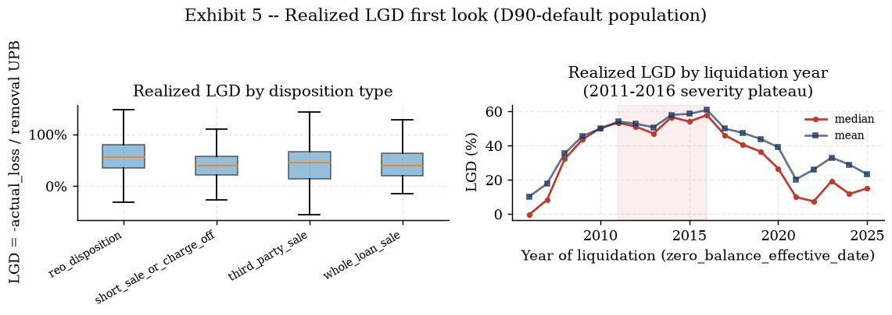

Real dates, real states, real losses: the SFLLD rung-3 build, the D90 absorbing default derived
precisely, and two orphaned derivations — net credit loss discounting and the roll-rate bridge — finally get their
fixture walkthroughs
IFRS9 ECL Study-Notes Compendium — Chapter 11 of 13. Compiled from
outputs/freddie/ingest/dq_report.md, outputs/freddie/eda/eda_report.md,
outputs/panel/waterfall.md, freddie/ingest.py, freddie/build_panel.py,
freddie/macro.py, tests/fixtures/compute_ncl.py,
tests/fixtures/compute_rollrate.py, and data/processed/freddie/*.parquet (read live this
session) on 2026-07-19.
Chapters 1–10 built and read an entire IFRS 9 ECL engine — staging, hazard, LGD/EAD, Vasicek, scenarios,
challengers, the agent, the app — on the DCR panel: a synthetic, anonymized-clock, national-macro-only dataset
(49,974 loans, 621,736 rows, Chapter 3's own build waterfall). This chapter turns to the project's
rung-3 build: the real Freddie Mac Single-Family Loan-Level Dataset (SFLLD) sample, ingested,
absorbing-D90-flagged, and merged against genuinely state-level FRED macro series by freddie/ingest.py,
freddie/build_panel.py and freddie/macro.py. Two derivations flagged in
notes/plan/derivation_backlog.md as D-7 (net-credit-loss discounting) and D-8 (the 90→180-DPD
roll-rate bridge) were left open by Chapter 4 (see that chapter's own top-of-file scope note) precisely because
they belong here: D-8 is the generic textbook version of the same row-normalized transition-matrix idea this
chapter's real roll-rate matrices already use, and D-7 is the generic version of the same net-credit-loss accounting
this chapter's realized-loss fields already report. Source anchors:
outputs/freddie/ingest/dq_report.md, outputs/freddie/eda/eda_report.md
(11.1–11.6, 11.14–11.15);
knowledge/sources/ifrs9_credit_risk_notes.md §11.3–11.4 via
tests/fixtures/compute_rollrate.py / compute_ncl.py
(11.8–11.9, 11.12–11.13).
11.1 Why real GSE data: the three upgrades
The DCR engine (Chapters 1–9) is a complete, internally-consistent ECL machine — but every date on its
clock is an anonymized quarter index, every macro series is national-only, and every loss is a modeled LGD
assumption, not an audited outcome. The SFLLD rung-3 build closes exactly those three gaps, and nothing else: it
does not replace the DCR engine (Chapter 12 fits its own hazard/LGD models on this panel, a separate,
parallel build) — it demonstrates what changes when the underlying data stops being synthetic.
Upgrade
DCR panel (Ch.1–9)
SFLLD panel (this chapter)
What it unlocks
Real calendar dates
anonymized quarter index $t=1\ldots60$
real monthly_reporting_period, 2005–2025
the GFC hump, the COVID spike, and 2022–24 normalization are DATED events with dated causes (§11.15), not an anonymized clock
Real states
none (state_orig_time flagged "unused at this rung", Ch.3 waterfall)
property_state, 54 postal codes (§11.5)
the collateral channel in real geography — NV/AZ/FL/CA vs TX/ND (§11.14) — invisible to a panel with no state field
Real realized losses
modeled LGD assumption
actual_loss_calculation, an audited realized-loss field
the first empirical severity distribution in this compendium to calibrate against (§11.13)
Source: outputs/freddie/eda/eda_report.md "What real GSE data buys over the DCR engine's
synthetic panel".
What this means. Every one of these three upgrades is a genuine capability gain, not merely "more data" —
each closes a documented, explicitly-flagged limitation of the DCR panel. The collateral-channel upgrade is the
sharpest of the three: Chapter 3's own build waterfall for the DCR panel keeps a
state_orig_time_missing flag on 2,829 rows and documents "state unused at this rung (national macros
only; no state-level merge in scope)" — this chapter is the rung where that scope pin finally gets closed, and
§11.14's $r=0.89$ state-level HPI-drawdown-vs-default correlation is a result the DCR panel could not have
produced under any specification, no state field to condition on.
Gotcha — "real data" does not mean "strictly larger" or "strictly better specified". The SFLLD sample (17
vintages, 837,500 loans, §11.2) is larger in raw row count than the DCR panel (49,974 loans) but the Phase-B
hazard refit built on it (Chapter 12) is explicitly a SIMPLER model in one respect: it fits only the DEFAULT
(D90) cause-specific hazard, with no competing-risk prepayment hazard, unlike the DCR champion's dual-hazard framing
(outputs/freddie/hazard/hazard_report.md §0, declared as a simplification). Real data upgrades the
INPUTS; it does not automatically upgrade every downstream modeling choice — those remain separate decisions, made
and documented separately in Chapter 12.
Check yourself.
Which of the three upgrades (real dates, real states, real losses) is responsible for §11.14's finding that
NV/FL/AZ/CA default rates sit far above TX/ND for the 2006–07 vintages?
Answer
Real states — property_state. The DCR panel has no state field at all
(state_orig_time flagged unused), so it cannot condition on geography; the collateral-channel result
requires a real state field to merge state-level HPI/UER against.
Why does "real realized losses" matter specifically for LGD work, beyond simply being more accurate data?
Answer
Because it is the first AUDITED severity outcome in the compendium (actual_loss_
calculation) rather than a modeled assumption — every prior LGD number in Chapters 2 and 4 was either
a synthetic-panel workout outcome or a fitted model's prediction; SFLLD's realized-LGD population (§11.13)
is the first chance to calibrate a model against ground truth rather than against another model's output.
11.2 Sample design: 17 vintages, the coverage gap, and the 32-field layout verification story
freddie/ingest.py reads Freddie Mac's own public SFLLD sample dataset — not the full
loan-level population — 17 origination-vintage zip files, each holding two pipe-delimited, header-less
text files: sample_orig_{YYYY}.txt (one row per loan) and sample_svcg_{YYYY}.txt (one row
per loan-month). Full-year vintages sample exactly 50,000 origination loans (Freddie's own documented sample
methodology); 2025 is a partial year through the Q3 origination cutoff and samples a proportionately smaller 37,500
— validate_orig() only enforces the 50k floor for non-2025 vintages, so this is not treated as a
data-quality defect.
Vintages downloaded (17)
Vintages NOT downloaded (4, documented gap)
2005–2010, 2014–2016, 2018–2025
2011, 2012, 2013, 2017
Source: freddie/ingest.pyVINTAGE_YEARS / MISSING_VINTAGES;
outputs/freddie/ingest/dq_report.md line 1: "not an ingestion failure — documented gap".
The 32-field layout verification story. Both files carry exactly 32 fields per row, in a fixed
official column order (ORIG_COLUMNS, SVCG_COLUMNS) copied from Freddie Mac's own
"Single-Family Loan-Level Dataset General User Guide" — but because the files are header-less, pandas will happily
parse 32 pipe-delimited strings into 32 named columns REGARDLESS of whether the names are in the right order. A
single field inserted, dropped, or transposed relative to the User Guide's documented position would silently
misassign every downstream column — e.g. if property_state (field 17) and property_type
(field 18) were swapped, every state-level merge in §11.5 would quietly join against the wrong geography,
with no parse error anywhere to flag it. This is exactly the "off-by-one" risk a headerless, position-defined format
carries, and it is the reason the module docstring states the layout was "cross-checked empirically against every
vintage" rather than simply transcribed from the PDF.
a field genuinely in the WRONG
position — a shifted column would either never hit its documented sentinel value, or hit it with an implausible
frequency, because it would actually be reading a different concept's numbers
run against multiple vintages
independently; a systematic column-order bug would misfire identically across all of them, not just one
Valid-value-set check (test_delinquency_ladder_values_in_documented_set,
validate_svcg's bad_dlq_values/bad_zb_codes): every
current_delinquency_status value must be a non-negative integer string or the literal "RA"
a shifted current_delinquency_status column would immediately start producing values outside
this tight, documented set — most other 32 fields (dollar amounts, dates, free-text names) do not share this
distinctive value-set signature, so a swap involving this field is hard to miss
run per vintage; 17
independent chances to catch a systematic shift, not one
Source: freddie/ingest.py module docstring ("Layout source of truth" & per-field
sentinel documentation); tests/test_freddie_ingest.py (field-count, sentinel-frequency, and
delinquency-ladder tests, read directly).
What this means. None of these four checks, alone, PROVES the column order is right — a sufficiently
adversarial reordering (e.g. swapping two fields with genuinely overlapping value ranges and no distinctive
sentinel) could in principle survive all four. What they collectively buy is a MUCH higher bar than "the file parsed
without an exception": every one of the 32 fields with a documented sentinel code or a tight valid-value set gets an
independent empirical check, run across all 17 vintages, so a genuine off-by-one error has to survive dozens of
independent statistical fingerprints simultaneously, not just avoid crashing pandas once.
Gotcha — "the file parsed with no errors" is not evidence the columns are correctly labeled. A pipe-delimited
read with a fixed column-name list will ALWAYS succeed as long as the row has the expected token count — that is a
necessary, not sufficient, correctness check. The dangerous failure mode for a headerless format is not a crash; it
is a silently-successful parse into the wrong column names, which is precisely what the sentinel-frequency and
valid-value-set checks (not the field-count check alone) are designed to surface.
Check yourself.
Why is assert len(ORIG_COLUMNS) == 32 alone insufficient to catch every possible field-layout bug?
Answer
It only checks the COUNT of names in the hardcoded list, not their ORDER against the actual
file — a list with the right 32 names in the wrong sequence would pass this assert trivially while still
mislabeling every column. It catches an added/dropped field, not a reordering.
Why does the delinquency-ladder valid-value-set check make a particularly strong guard specifically for the
current_delinquency_status field's position?
Answer
Because its value set is unusually tight and distinctive (non-negative integer strings or the
literal "RA") compared to most of the other 31 fields (dollar amounts, dates, free-text names, wide numeric
ranges) — a field genuinely occupying that position but actually containing different data would very likely
produce values outside that narrow set almost immediately, making a shift easy to detect statistically even
though pandas would parse it without any error.
Why does running the sentinel-frequency and valid-value-set checks across all 17 vintages independently matter
more than running them once against a single vintage?
Answer
The field layout is documented as FIXED across vintages (Freddie's own official column
order), so a genuine layout bug would misfire identically in every vintage's file. Checking all 17 independently
means a bug has to simultaneously evade detection in 17 separate empirical tests, not just one — a much higher
bar than a single spot-check, even though each individual vintage's check is the same logic.
11.3 The D90 absorbing default definition, derived precisely
The primary default event modeled in this panel is D90: the FIRST loan-month where
current_delinquency_status corresponds to 90+ days delinquent — formally,
$$ \text{severe}_t = (\text{dlq_num}_t \ge 3)\ \text{OR}\ \text{is_reo_acquisition}_t, $$
where dlq_num is the parsed numeric delinquency-status ladder and is_reo_acquisition
flags the literal string "RA" (REO Acquisition — the field's own escape hatch for "days-delinquent no
longer means anything, the property has already been acquired"). D90 is modeled as an absorbing
event: once a loan's cumulative first-D90 indicator fires, every subsequent loan-month for that loan is dropped from
the MODELING panel (panel_monthly.parquet) — even if the servicer later reports the loan curing back
below 90 DPD.
Candidate default definition
Trigger
Availability
Frequency (this sample)
Timing vs D90
Used for
D90 (used, this panel)
dlq_num>=3 or RA
every loan-month, every vintage uniformly
overall 5.32% of loans (§11.4)
earliest of the
three
the modeling target: d90_event
D180
dlq_num>=6
same source field, just a higher threshold — no harder to
compute
strictly lower than D90 (a subset of D90 loans that stay delinquent longer)
later
not used — would push the event further out and undercount early-stage risk
Liquidation
zero_balance_code in {02,03,09,96}
ONLY for loans that reach a
terminal servicer disposition within the performance window
13,836 of 44,593 D90 defaults (≈31.0%,
§11.13) reach a liquidation code with realized loss populated — most D90 defaults cure, modify, or are still
open/censored
latest, often lagged years (§11.13's liquidation-pipeline lag)
kept on
loan_orig.parquet for competing-risk / LGD-NCL work (§11.12–11.13), never the modeling
target
Source: freddie/build_panel.py module docstring ("DEFAULT DEFINITION", "WHY D90 AND NOT
D180 OR LIQUIDATION"); the 31.0% figure from outputs/freddie/eda/eda_report.md Exhibit 5's
"Modeling cautions" note.
The tie-break, derived from the panel-construction code (no skipped steps)
(freddie/build_panel.py's _build_monthly_panel).
1.Flag every severe row. For each loan-month $t$,
$\text{severe}_t = (\text{dlq_num}_t\ge3)\ \text{OR}\ \text{is_reo_acquisition}_t$, computed over the FULL,
un-truncated servicing history for the loan.
2.Count prior severe rows, strictly before $t$.
Let $\text{cumsum}_t=\sum_{s\le t}\text{severe}_s$ (an inclusive running count, computed per loan). Then
$\text{prior_severe_count}_t=\text{cumsum}_t-\text{severe}_t$ removes the CURRENT row's own contribution, leaving
exactly the count of severe rows strictly before $t$. This is the key construction: a plain
$\text{cumsum}_t\le1$ filter would incorrectly keep every row after the first severe month too (cumsum stays at
1 forever once triggered); subtracting the current row's own flag is what makes the filter stop AT the event, not
after it.
3.Truncate. Keep row $t$ iff
$\text{prior_severe_count}_t=0$ — every loan-month up to and including its first severe month survives; everything
strictly after is dropped from the modeling panel. This is the absorbing property.
4.The tie-break. On the surviving rows, check
whether a terminal zero_balance_code is ALSO populated on the exact same row that triggered
$\text{severe}_t$ (empirically real, roughly 0.1–0.2% of loans per vintage — e.g. loans
F07Q10009844, F07Q40358784 in the 2007 vintage — most often a zero_balance_code=='01'
Prepaid-or-Matured disposition, a DDLPI/MBA-method delinquency-status artifact at final payoff, not a genuine
ongoing default):
$$ \text{d90_event}_t = \text{severe}_t\ \text{AND NOT}\ \text{has_zero_balance_code}_t. $$
When both fire on the same row, the zero-balance disposition code WINS and d90_event is suppressed on
that row — this is exactly what keeps d90_event and prepay_event (or any other
zero-balance-derived flag) mutually exclusive AS MODELED, never both firing on the same loan-month.
What this means. "Cures" (dlq_num falling back below 3 after previously hitting 3+) are real events in the
raw SFLLD data — tests/test_freddie_ingest.py's hand-checked loan F07Q10000581 (2007
vintage) reaches 90+ DPD, later cures back below 3 in the raw servicing history, and is never terminated by a
zero-balance code within the performance window. The absorbing-D90 modeling panel deliberately does NOT see this
cure: once F07Q10000581 hits its first severe month, every later row — cure included — is truncated
from panel_monthly.parquet. This mirrors the DCR engine's own discrete-time hazard framing
(engine/hazard.py, not imported here — rung 3 is a fresh build): a loan is "at risk of first
default" only up to its first default month, by construction, in both engines.
Consequence, stated precisely.d90_event and prepay_event are mutually exclusive
AS MODELED: a loan can only prepay (zero_balance_code==01 on its terminal panel row) if it never first
went 90+ DPD in the truncated modeling panel. A loan that goes 90+ DPD and is LATER foreclosed, short-saled,
or otherwise liquidated is modeled purely as a D90 default — the later liquidation is not a separate modeling-panel
event. It IS fully preserved on loan_orig.parquet (terminal_outcome, realized-loss fields),
since that table is built from the FULL, un-truncated servicing history (§11.13's realized-LGD population
depends on exactly this un-truncated table).
Check yourself.
Why does prior_severe_count = cumsum - severe (subtracting the current row) rather than just using
cumsum <= 1 as the keep-filter?
Answer
A boolean cumulative sum only grows on a TRUE row and then stays flat forever after — so
cumsum <= 1 alone would be true both ON the first severe row and on every row AFTER it (cumsum is
still 1), incorrectly keeping the whole post-event tail. Subtracting the current row's own flag isolates "was any
PRIOR row severe", which is exactly 0 up to and including the event month and exactly ≥1 strictly after it —
the filter that actually truncates AT the event.
A loan's severe flag and a terminal zero_balance_code both fire on the same reporting row. What
does the panel record for that row, and why is this the RIGHT default, not an arbitrary one?
Answer
d90_event is suppressed (set to 0) on that row; the zero-balance disposition
code wins. This is documented as usually reflecting a DDLPI/MBA delinquency-status artifact at final payoff/
maturity rather than a genuine ongoing default, so treating it as a non-default (prepay/other terminal) rather
than a D90 default is the economically correct reading of that specific data pattern, not an arbitrary
tie-break rule.
Why does the D90-vs-D180-vs-liquidation table rule out liquidation as the modeling target even though it is the
"truest" terminal credit event?
Answer
Because it is a strictly later, lower-frequency, servicer-dependent event: only about 31.0% of
D90 defaults in this sample ever reach a liquidation zero-balance code within the observed performance window
(most cure, modify, or remain open/censored) — using liquidation as the primary default definition would
understate credit risk by construction, since the majority of true credit events would never be counted as
events at all.
11.4 Panel construction: the waterfall, the tie-break, and the flowchart
Per-vintage row counts and D90 rates, read directly off outputs/freddie/ingest/dq_report.md
(recomputed, not retyped, and cross-checked against a live re-read of panel_monthly.parquet +
loan_orig.parquet this session — §11.7's vintage-curve data below reproduces every one of these
per-vintage final D90 rates to the displayed decimal from the raw panel independently):
Vintage
n_loans
n_loan_months (modeled)
D90 rate
Prepay rate
Censored rate
2005
50,000
3,588,153
10.75%
87.21%
1.89%
2006
50,000
2,833,990
14.11%
83.95%
1.61%
2007
50,000
2,592,669
16.26%
81.58%
1.82%
2008
50,000
2,224,103
9.14%
88.85%
1.78%
2009
50,000
3,078,747
3.07%
92.31%
4.34%
2010
50,000
3,363,401
3.16%
90.26%
6.43%
2014
50,000
3,265,018
3.78%
79.21%
16.83%
2015
50,000
3,317,071
4.00%
73.70%
22.23%
2016
50,000
3,201,194
4.66%
68.40%
26.81%
2018
50,000
1,901,886
5.36%
76.36%
18.10%
2019
50,000
1,750,978
5.48%
67.56%
26.76%
2020
50,000
2,306,271
2.08%
36.20%
61.55%
2021
50,000
2,272,716
1.80%
17.09%
80.91%
2022
50,000
1,766,601
3.02%
15.66%
80.91%
2023
50,000
1,214,980
1.85%
18.01%
79.81%
2024
50,000
691,421
0.63%
9.37%
89.72%
2025
37,500
153,366
0.04%
1.79%
98.14%
Total
837,500
39,522,565
5.32% (overall)
58.93% (overall)
—
Source: outputs/freddie/ingest/dq_report.md "Per-vintage row counts and event rates";
performance window ends 2025-09 for every vintage.
The 0.04%–16.26% D90-rate range across vintages is not noise — it is the pre-crisis-vintage hump entirely
visible in raw origination-year row counts before any modeling: 2007 (16.26%) and 2006 (14.11%) sit far above every
other vintage, 2020–2025 sit near the floor (loans too young, and 2020–21 specifically distorted by
forbearance, §11.15), and 2025's 0.04% simply reflects a partial-year vintage barely six months into its
performance window by the 2025-09 cutoff.
Exhibit 11.1 — Panel construction: raw SFLLD files → absorbing-D90 default panel
→ macro merge, including the same-row tie-break (§11.3). Regenerated from
freddie/build_panel.py and freddie/macro.py's documented pipeline.
What this means, read against the DCR panel's own waterfall (Chapter 3). The DCR panel's build waterfall
removes rows in 7 explicit steps (duplicate rows, ID collisions, status conflicts, post-terminal truncation,
non-positive origination balances, zero-balance live rows, non-positive note rates) — a data-cleaning waterfall on a
SINGLE already-merged file. The SFLLD build has no equivalent multi-step cleaning waterfall because the absorbing-
D90 truncation (§11.3's derivation) IS the panel's own row-elimination step, applied per loan via the
severe-flag/tie-break logic rather than via a sequence of ad-hoc row-level defect filters — the two panels solve
structurally different problems (DCR: clean a noisy, pre-merged vendor file; SFLLD: define and apply an absorbing
event on official, individually-clean vintage files) with correspondingly different-shaped construction logic.
Gotcha — the tie-break rate (0.1–0.2% of loans per vintage) sounds negligible, but it is exactly the
population that would otherwise silently double-count an event. Without the tie-break, a loan whose
severe flag and terminal zero_balance_code both fire on the same row could be counted as
BOTH a D90 default and a prepayment/other-terminal outcome somewhere downstream, depending on which flag a later
aggregation reads first — a small-looking population bug that would corrupt the mutual-exclusivity invariant
§11.3's .warn box states as a hard guarantee. The fix is a single, documented precedence rule
(disposition code wins), not a post-hoc patch.
Check yourself.
Why does 2007's D90 rate (16.26%) exceed 2006's (14.11%) even though 2006 predates it — isn't an earlier
vintage supposed to have had more time to season into default?
Answer
Both are old enough (18+ years by the 2025-09 performance window end) to have reached their full
cumulative D90 curve (Exhibit 11.5's vintage curves flatten well before 225 months), so seasoning time is not
the differentiator here — 2007 vintage loans were underwritten at the very peak of the housing bubble with the
weakest documentation/leverage standards of the whole 2005–2010 window, so a higher SHARE of that vintage's
loans were destined to default regardless of how long they season, not merely delayed relative to 2006.
Why does the censored rate rise so sharply for 2020–2025 vintages (61.55% up to 98.14%) compared to
2005–2010 (1.61%–6.43%)?
Answer
These vintages are simply too young relative to the fixed 2025-09 performance-window end —
a 2024 or 2025 loan has had only months, not years, to reach either a D90 event or a prepayment/other terminal
outcome, so the overwhelming majority of its loan-months are still active (right-censored) at the observation
cutoff. This is a function of vintage age at the panel's snapshot date, not a change in underlying credit
quality.
11.5 State-level macro merge (Requirement 12): genuine FRED series and coverage
Because the SFLLD orig table carries a real property_state field, freddie/macro.py
merges STATE-level unemployment and house-price series instead of the DCR panel's national-only macros
(§11.1's second upgrade). Per the campaign's Requirement 12 (every macro variable, in every model, gets the
full honesty card), both series below are curated the same way Chapter 6's DCR/satellite macro cards are, and
share the same source-of-truth discipline the app's own /api/model/macro_glossary endpoint serves.
Source. FRED series {POSTAL}UR per state (e.g. NVUR, CAUR)
— a genuine, per-state live FRED pull (fetch_fred_series, cached to CSV after the
first network call; every subsequent run, including the test suite, is offline against the cache). Honesty
contrast: this is the OPPOSITE sourcing situation from Chapter 6's DCR/satellite national macros, which are
explicitly a vendor-premerged, anonymized-clock series NOT pulled live from FRED — SFLLD's state series genuinely
are. Two states — GU, VI — have no {POSTAL}UR series at all and fall back to the national anchor
UNRATE, flagged via uer_is_national_fallback.
Transformation + lag rationale. Raw level, no transform (FRED already reports a percentage-point
rate). Lag = 1 month: matches the champion hazard fit's timing convention (freddie/fit_hazard.py,
Chapter 12) and mirrors the DCR panel's own "only $t-k$, $k\ge1$, ever referenced" no-lookahead rule at this
panel's native monthly (not quarterly) frequency.
Units and scale. One "unit" is a whole percentage point: a value of $5.6$ means state
unemployment $=5.6\%$, not $5.6\%\%$ or $0.056$. No decimal-vs-percentage-point trap here (contrast §11.6's
sibling hpi_growth_lag1 below, which IS a decimal log-difference).
Coefficient reading — worked example (python-computed). Champion hazard fit coefficient
$\beta_{\text{uer_lag1}}=0.0950$ (outputs/freddie/hazard/hazard_report.md). A $+1$pp rise in state
unemployment: $$ HR = \exp(0.0950\times1) = 1.0997, $$ a $9.97\%$ proportional increase in the monthly default
hazard, holding every other covariate fixed.
Economic channel. Labour-income / cash-flow channel: a higher state unemployment rate directly
raises the probability that a borrower in that state loses income needed to service the mortgage.
Variable card — delta_uer_lag1 (1-month change in state UER, lag 1 month).
Source. Derived from the SAME {POSTAL}UR series as uer_lag1 above —
not a separate FRED pull, a first difference computed inside freddie/macro.py's
_add_derived_columns.
Transformation + lag rationale. $\Delta uer_t = uer_t - uer_{t-1}$, then lagged 1 month like
every other macro term here — captures labour-market MOMENTUM (is the state's unemployment rate actively
worsening right now), distinct from the LEVEL term above.
Units and scale. Same percentage-point units as the level term: $+1.0$ means unemployment rose
1 full percentage point month-on-month — a large, COVID-era-scale move in normal times (contrast the April 2020
state UER jumps of roughly $+10$pp month-on-month that saturate this term, §3 of
hazard_report.md).
Coefficient reading — worked example (python-computed). $\beta_{\text{delta_uer_lag1}}=0.6671$.
A genuine $+1$pp LABOUR-MARKET SHOCK moves both uer_lag1 and delta_uer_lag1 by $+1$pp
simultaneously (a real unemployment shock is a level move that IS a momentum move in the same month), so the net
effect combines both coefficients: $$ HR_{\text{net}} = \exp(0.0950+0.6671) = \exp(0.7621) = 2.1428, $$ more than
a DOUBLING of the monthly default hazard from a genuine 1pp state unemployment shock — read the level coefficient
alone and the effect looks 20$\times$ smaller ($HR=1.0997$) than it actually is, exactly the level-vs-momentum
reading trap Chapter 3 §3.7 flags for the DCR champion's own UER terms.
Economic channel. Labour-market momentum: a state where unemployment is actively rising signals
forward-looking cash-flow stress beyond what the current LEVEL alone captures — borrowers anticipate further
income risk, not just react to today's rate.
Source. FRED series {POSTAL}STHPI per state (e.g. NVSTHPI) — genuine
live FRED pull, same sourcing honesty as uer_lag1. THREE states/territories — GU, PR, VI — have no
{POSTAL}STHPI series (PR HAS a UER series but no HPI series specifically) and fall back to the national
anchor USSTHPI, flagged via hpi_is_national_fallback.
Transformation + lag rationale. FRED reports STHPI quarterly, at quarter-START dates. Each
state's series is reindexed onto a continuous monthly index and FORWARD-FILLED (the value published for a quarter
is held constant across that quarter's three months) — the documented alternative, linear interpolation between
quarter-start prints, was rejected because it would let month 2 of a quarter "see" month 3's not-yet-published
realized print, exactly the intra-quarter information the no-lookahead rule excludes. $hpi\_growth=\Delta\log(HPI)$
on the STEPPED series, then lagged 1 month.
Units and scale — the log-growth trap. One "unit" is a DECIMAL log-difference, and because the
underlying series is step-function-forward-filled, $hpi\_growth$ is $\approx0$ for two of every three months and
carries the WHOLE quarter's growth in the first month of each new quarter — a visible artifact, not noise, and the
reason the EDA exhibits (§11.14 in a related context) use a trailing 12-month sum rather than reading a single
month's value.
Coefficient reading — worked example (python-computed). $\beta_{\text{hpi_growth_lag1}}=-3.3442$.
Read PER FULL LOG-UNIT (a 100% monthly house-price move — never observed), the hazard ratio looks catastrophic:
$\exp(-3.3442)=0.0353$. Rescaled to a realistic $+1$pp ($0.01$) monthly HPI-growth move:
$$ HR = \exp(-3.3442\times0.01) = \exp(-0.033442) = 0.9671, $$ a $3.3\%$ REDUCTION in monthly default hazard per
percentage point of monthly house-price appreciation — the economically legible reading, and the same scale trap
Chapter 3 §3.7's gotcha box flags for the DCR champion's own (national) HPI term.
Economic channel. Collateral / negative-equity channel: rising state house prices rebuild
borrower equity, restoring the option to sell or refinance out of trouble — the SAME channel §11.6's
updated_ltv construction and Chapter 4's LGD model both cite, told a third time here at the
state level.
Coverage note
States/territories affected
UER national fallback (no {POSTAL}UR series)
GU, VI
HPI national fallback (no {POSTAL}STHPI series)
GU, PR, VI
Total states/territories in the SFLLD sample
54 (50 states + DC + PR + GU + VI)
Source: freddie/macro.py "COVERAGE NOTE" docstring, empirically verified against the live
FRED API; data/processed/freddie/macro/coverage_note.json, read live this session (n_states=54,
ur_fallback_states=['GU','VI'], hpi_fallback_states=['GU','PR','VI']).
Exhibit 11.4 — State unemployment rate, 2000–2025.
Source: outputs/freddie/macro/state_hpi_growth_2000_2025.png,
outputs/freddie/macro/state_uer_2000_2025.png, both generated by freddie/macro.py from the
genuine cached FRED pulls §11.5's variable cards describe.
What this means. NV's UER series (Exhibit 11.4) is the standout in BOTH crisis windows — peaking
highest of the five highlighted states in the GFC and again, far more sharply, in COVID (the state's tourism/
hospitality-heavy economy is unusually exposed to a demand-collapse shock) — while ND barely moves in either
window, a preview of exactly the cross-state dispersion §11.14's collateral-channel scatter quantifies for
HPI. The two panels together are the raw material the champion hazard's uer_lag1/
hpi_growth_lag1 coefficients (§11.5's variable cards) are fitted against.
Gotcha — mixed scales inside the champion hazard's macro block are not a bug, but are a live misreading risk,
exactly as Chapter 6 §6 flags for the satellite model.uer_lag1/delta_uer_lag1
enter as whole percentage points ($5.6$, $1.0$) and hpi_growth_lag1 enters as a decimal log-difference
($0.01$) in the SAME fitted hazard equation — both are individually correct (each matches that concept's native
FRED representation) but a reader substituting "1.15" for a 1.15% monthly HPI move instead of "0.0115" would compute
a hazard-ratio effect roughly $100\times$ too large from that term alone. Always confirm which convention a given
macro coefficient's card uses before substituting a real-world move into its worked example.
Check yourself.
Why is uer_lag1's hazard-ratio worked example ($HR=1.0997$ per $+1$pp) misleading if read in
isolation, and what is the economically correct combined reading?
Answer
A genuine 1pp unemployment SHOCK moves both the level (uer_lag1) and its own
1-month change (delta_uer_lag1) simultaneously, so the level coefficient alone
($HR=1.0997$) badly understates the true effect; the combined reading
$\exp(0.0950+0.6671)=2.1428$ is the economically correct net hazard-ratio for a genuine shock.
Which two macro coverage gaps mean Puerto Rico's hpi_growth_lag1 is actually the NATIONAL
USSTHPI series in disguise, while its uer_lag1 is genuinely PR-specific?
Answer
PR has a live PRUR FRED series (state-specific UER, no fallback needed) but NO
PRSTHPI series (FRED has no state-level house-price index for Puerto Rico), so
hpi_is_national_fallback is TRUE for PR while uer_is_national_fallback is FALSE — an
asymmetric coverage gap unique to PR among the three fallback territories (GU and VI fall back on BOTH
series).
Why does the HPI series get forward-filled from quarter-start rather than linearly interpolated across the
three months of a quarter?
Answer
Linear interpolation between a quarter's start print and the NEXT quarter's start print would
let an early month in the current quarter "see" a partial preview of a print that has not been published yet —
exactly the intra-quarter information the panel's no-lookahead convention rules out. Forward-fill only ever uses
the most recently PUBLISHED value, so it never invents information from the future.
11.6 Updated LTV: the NV worked examples
freddie/macro.py adapts the DCR-verified updated-LTV formula (data/panel/build_panel.py's
"UPDATED LTV" section, which the vendor's own LTV_time column there reproduces to $\sim10^{-9}$) to
state-level HPI:
Updated LTV, derived from the collateral-indexation idea (no skipped steps).
1.Start from the definition of LTV. $LTV=
\text{balance}/\text{property value}$. At origination, $LTV_{\text{orig}}=\text{orig_upb}/\text{orig_value}$, so
$\text{orig_value}=\text{orig_upb}/LTV_{\text{orig}}$.
2.Index the property value forward using the state HPI.
Assume the property's value moves in line with its state's house-price index between origination and the current
reporting month: $\text{current_value} = \text{orig_value}\times(hpi_{\text{now}}/hpi_{\text{orig}})$.
3.Substitute the current balance and current value into the
LTV definition.
$$ updated\_ltv = \frac{\text{current_upb}}{\text{current_value}} = \frac{\text{current_upb}}
{(\text{orig_upb}/LTV_{\text{orig}})\times(hpi_{\text{now}}/hpi_{\text{orig}})}
= LTV_{\text{orig}}\times\frac{\text{current_upb}}{\text{orig_upb}}\times\frac{hpi_{\text{orig}}}{hpi_{\text{now}}}. $$
The three factors read as: original leverage, times amortization paydown, times the collateral-value INDEX
correction (house prices FELL $\Rightarrow hpi_{\text{orig}}/hpi_{\text{now}}>1\Rightarrow$ updated LTV rises above
what paydown alone would suggest).
4.Origination-month approximation, stated honestly.
$hpi_{\text{orig}}$ is read at the loan's first_payment_date (the field the public SFLLD orig table
actually carries), not the true note/closing date the layout does not expose — first-payment date is normally one
calendar month after closing, a small, documented, one-month approximation, not an estimate of genuinely unknown
data.
Worked example 1 — NV, 2006 vintage, observed 2009-03 (the crash). Real loan values
(tests/test_freddie_macro.py::test_updated_ltv_formula_matches_documented_derivation's fixture, cross-
checked live this session against data/processed/freddie/macro/state_macro_panel.parquet's cached, real
FRED-derived NV HPI index): $LTV_{\text{orig}}=80.0$, $\text{orig_upb}=\$254{,}000$, $\text{current_upb}
=\$245{,}566.35$ (2009-03), $hpi_{\text{orig}}$ read at 2006-03, $hpi_{\text{now}}$ at 2009-03.
Despite ~3.3% of ordinary amortization paydown (the ratio in row 3 is below 1), updated LTV RISES from
$80.0$ to $114.43$ — the NV HPI collapse (index falling from 215.85 to 145.90, a $\sim32\%$ drop) overwhelms the
paydown effect entirely, pushing this loan deep underwater by 2009. This matches the qualitative claim
tests/test_freddie_macro.py::test_updated_ltv_rises_through_the_nv_crash checks against a different
real 2006-vintage NV loan (updated_ltv > orig_ltv, post-crash).
Worked example 2 — NV, real loan F10Q10019125, 2010 vintage, 2010-06 vs 2019-06 (the recovery).
Read live this session directly from freddie.ingest.read_orig_vintage(2010) /
read_svcg_vintage(2010) (the first NV loan in that vintage's orig table) and the real cached NV HPI
series: $LTV_{\text{orig}}=44.0$, $\text{orig_upb}=\$110{,}000$, first payment 2010-03.
date
current_upb
state HPI index
amort. ratio
HPI ratio
updated_ltv
2010-06 (near the NV trough)
\$109,000.00
113.4803
0.990909
1.034830
45.12
2019-06 (post-recovery)
\$89,550.05
209.3457
0.814091
0.560952
20.09
$LTV_{\text{orig}}=44.0$ is already low, so 2010-06's updated LTV (45.12) sits close to origination — this loan was
originated almost exactly AT the NV price trough, not during the crash. By 2019-06, NV house prices have nearly
doubled off that trough (HPI index $113.48\to209.35$) and 9 years of amortization have paid the balance down to
81.4% of its original size — both effects push updated LTV to 20.09, WELL below both origination LTV and its own
2010-06 reading, confirming
tests/test_freddie_macro.py::test_updated_ltv_falls_as_nv_recovers's qualitative claim with the actual
numbers behind it.
What this means. The two worked examples above are the same formula, the same state, and structurally
opposite outcomes — precisely because they sample two different points on NV's own HPI cycle (crash vs recovery)
relative to each loan's own origination point. This is the state-level collateral channel made concrete at the
single-loan level: §11.14's $r=0.89$ state-level correlation between HPI drawdown and vintage default rate is
the AGGREGATE version of exactly this mechanism.
Gotcha — a low origination LTV does not make a loan immune to the collateral channel; it only raises the price
drop needed to trigger it. Worked example 2's loan started at $LTV_{\text{orig}}=44.0$ — a conservatively
underwritten loan by any standard — and still shows updated LTV RISING from 44.0 to 45.12 over its first three
months, purely from the HPI ratio term, before the recovery years bring it back down. The formula treats leverage
and collateral value as two independent multiplicative factors; a low starting LTV shifts where the underwater
threshold sits, it does not remove the mechanism.
Check yourself.
In worked example 1, which single factor — amortization or the HPI ratio — is responsible for updated LTV
rising above origination LTV, and how do you know from the table alone?
Answer
The HPI ratio (1.479485, >1) — the amortization ratio (0.966797) is BELOW 1, which alone
would push updated LTV down, not up. Since the product still rises above the origination LTV of 80.0, the HPI
ratio's upward pull must more than offset the amortization ratio's downward pull; the HPI ratio is doing all
the work in the direction actually observed.
Why does freddie/macro.py use first_payment_date rather than the true note/closing
date to look up $hpi_{\text{orig}}$, and is this an estimate of missing data?
Answer
The public SFLLD layout does not expose a note/closing-date field at all, only
first_payment_date (documented, 32-field layout, §11.2) — since first-payment date is normally
one calendar month after closing, this is a small, DOCUMENTED, one-month approximation using a field that
genuinely exists in the data, not an estimate standing in for a value the data lacks.
11.7 Interactive: vintage-curve explorer
The widget below reproduces freddie/eda.py's compute_vintage_curves exactly — cumulative
D90 rate by months-on-book, per vintage — recomputed live this session directly from
panel_monthly.parquet/loan_orig.parquet (every value below matches
outputs/freddie/ingest/dq_report.md's final per-vintage D90 rate to the displayed decimal, e.g. 2007's
curve ends at 16.26%, exactly §11.4's table entry). Toggle vintages on/off to compare eras directly.
Live widget — toggle vintages, real cumulative-D90 curves
Exhibit 11.5 — Vintage curves: real-dated SFLLD 2005–2025 sample. Embedded from
outputs/freddie/eda/exhibit1_vintage_curves.png, generated by freddie/eda.py from the same
underlying computation the widget above reproduces live.
What this means. Exhibit 11.5's right panel shows something the widget's D90-only view cannot: the
2020–21 refi wave shows up as a shared ACCELERATION across the 2014–2019 vintages' cumulative-prepay
curves, all hitting their inflection at the calendar point each vintage's own clock happened to reach 2020Q1 —
not as a feature of the 2020/2021 vintages' own (freshly-originated, fresh-clock) curves. A vintage-curve view alone,
without cross-referencing the calendar date each vintage reaches a given months-on-book value, would miss this
entirely — it is a genuinely calendar-driven event appearing on a months-on-book x-axis at DIFFERENT positions for
each vintage.
Gotcha — a vintage curve that looks "flat" at the right edge is not necessarily done seasoning; it may just be
running out of observed months. 2020's curve in the widget stops at 66 months on book (the panel's most recent
performance snapshot is 2025-09, and a 2020-vintage loan first paid in 2020 has only reached roughly 66 months by
then) — its cumulative D90 rate of 2.08% is a CENSORED read, not a final one, unlike 2006/2007/2008's curves, which
have run long enough (200+ months) to have flattened out for real. Comparing 2020's 2.08% directly against 2007's
16.26% as if both were equally "finished" curves would badly understate 2020's eventual rate.
Check yourself.
Toggle only 2007 and 2009 on. Both vintages are old enough to have fully seasoned (222+ and 198 months on book
respectively) — why does 2007 end at 16.26% while 2009 ends at only 3.07%?
Answer
Both curves are genuinely finished (not censored), so the gap is a real underwriting-era
difference: 2007 originations sit at the peak of the pre-crisis bubble (weak documentation/leverage standards),
while 2009 originations happened well into the credit tightening that followed the crisis — the same
seasoning-curve shape, at a much lower overall level.
Why would comparing 2020's D90 curve directly against 2007's at the SAME months-on-book value (e.g. both at
month 66) be misleading, even setting aside the censoring issue in the gotcha above?
Answer
Because month 66 for the 2020 vintage falls partly inside the COVID forbearance window
(2020-04 through roughly 2021-09), during which the naive D90 (dlq-based) definition is documented (§11.15)
to behave anomalously — administrative delinquency-status advancement continued for forborne loans even though
actual credit deterioration and liquidation activity collapsed. A month-66 comparison for 2020 is contaminated by
a regime effect that simply does not exist in 2007's history.
11.8 The roll-rate transition-matrix estimator (Derivation Backlog D-8)
freddie/eda.py's Exhibit 2 (§11.10) reports monthly roll-rate matrices: the probability a
loan in delinquency bucket $i$ this month is in bucket $j$ next month. This section derives the estimator those
matrices use from first principles, then (§11.9) walks the generic textbook version of the same idea
(tests/fixtures/compute_rollrate.py, the orphaned Derivation Backlog item D-8) step by step.
The row-normalized transition-count estimator, derived as a multinomial MLE (no skipped steps).
(freddie/eda.py's _matrix_for_window states the estimator directly as
mat.div(mat.sum(axis=1), axis=0); this derivation justifies it.)
1.Set up the model. Assume (a first-order Markov
assumption, stated explicitly rather than silently relied on) that, conditional on being in bucket $i$ this month, a
loan-month's NEXT bucket $j\in B=\{\text{current},30,60,90+,\text{prepaid},\text{default_terminal}\}$ is drawn i.i.d.
from a categorical distribution with true (unknown) probabilities $p_{i1},\ldots,p_{i|B|}$, $\sum_j p_{ij}=1$.
2.Write the row's likelihood. Observing $N_{ij}$
loan-months that transition from $i$ to $j$ (over some window, e.g. "GFC 2007–2009"), the multinomial
log-likelihood for row $i$'s parameters is
$$ \ell(p_{i\cdot}) = \sum_{j\in B} N_{ij}\ln p_{ij}. $$
3.Maximize subject to the simplex constraint. Form
the Lagrangian with multiplier $\mu$ for $\sum_j p_{ij}=1$:
$$ \mathcal{L}(p_{i\cdot},\mu) = \sum_j N_{ij}\ln p_{ij} - \mu\Big(\sum_j p_{ij}-1\Big). $$
5.Solve for $\mu$ from the constraint. Substituting
back: $\sum_j N_{ij}/\mu = 1 \Rightarrow \mu = \sum_j N_{ij} = N_{i\cdot}$ (the row's total transition count).
6.The estimator.
$$ \boxed{\;\hat p_{ij} = \frac{N_{ij}}{N_{i\cdot}}\;} $$
— exactly the row-normalized count matrix. Every cell in Exhibit 11.6 below is this MLE, computed over loan-month
pairs with a genuinely CONSECUTIVE next observation (next_age - loan_age == 1, so a reporting gap never
gets silently treated as a one-month transition), aggregated across all 17 vintages' full, un-truncated servicing
history within each calendar window.
What this means. This is the same row-normalized-count idea §11.9's generic $q_b=fwd/(fwd+cure)$ worked
example uses, specialized to a 2-outcome-per-row multinomial (forward vs cure only, ignoring the small "stay"
probability the generic backlog example does not model) instead of the full 6-outcome multinomial derived here.
Both are literally the same estimator; the generic example is the special case, the real matrices (§11.10) are
the general case.
Gotcha — the first-order Markov assumption in step 1 is a MODELING CHOICE, not a property the data
guarantees. The estimator derived above is only the correct MLE if a loan's next-month bucket genuinely depends
solely on its CURRENT bucket, not on how it got there or how long it has been there. A loan that has been at 90+
DPD for 8 months and a loan that JUST reached 90+ DPD this month are treated identically by this estimator even
though their true forward risk may differ (duration dependence) — the matrices in §11.10 are a first-order
summary, not a claim that duration effects do not exist.
Check yourself.
In step 4's first-order condition, why does solving for $\mu$ specifically require summing $N_{ij}$ over
$j$ rather than, say, over $i$?
Answer
Because the simplex constraint being enforced is PER ROW ($\sum_j p_{ij}=1$ for a FIXED $i$)
— each row of the transition matrix is its own separate categorical distribution with its own normalizing
constant, so the Lagrange multiplier $\mu$ (and hence the row total $N_{i\cdot}$) is computed independently for
each starting bucket $i$, not pooled across rows.
Why does freddie/eda.py require next_age - loan_age == 1 before counting a pair as a
transition, rather than just taking every consecutive ROW for a loan?
Answer
Because the raw servicing history can have reporting GAPS (a loan-month simply missing from
the file, not necessarily a real skip in the loan's actual history) — if two consecutive ROWS in the data are
actually 3 months apart in real loan age, treating that pair as a genuine one-month transition would silently
corrupt the transition-count estimator with a transition that spans more than one true month.
11.9 compute_rollrate.py — fixture walkthrough, every step
The generic textbook worked example this chapter absorbs from Chapter 4's open backlog (D-8,
knowledge/sources/ifrs9_credit_risk_notes.md §11.4, "Converting a 180-DPD definition to 90 DPD"):
a simplified 3-bucket roll ladder (90/120/150 DPD) with monthly roll-forward/cure PAIRS at each bucket, used to
bridge a D180-calibrated PD/LGD down to a D90 definition. Recomputed live this session,
uv run --no-sync python tests/fixtures/compute_rollrate.py — every RESULTS value below matches its
TARGET (the notes' own printed value) to the displayed decimal.
Step 1 — the eventual roll-forward probability per bucket, $q_b=fwd/(fwd+cure)$. Stated inputs (monthly
roll-forward, monthly cure) per bucket: 90 DPD $(0.50,0.12)$, 120 DPD $(0.55,0.10)$, 150 DPD
$(0.60,0.08)$ — a 2-outcome special case of §11.8's general estimator (forward vs cure only).
bucket
fwd
cure
$fwd+cure$
$q_b=fwd/(fwd+cure)$
90 DPD
0.50
0.12
0.62
0.806452
120 DPD
0.55
0.10
0.65
0.846154
150 DPD
0.60
0.08
0.68
0.882353
The notes' own printed values round these to $0.81$, $0.85$, $0.88$ — the fixture keeps full precision throughout,
which matters for step 2 below.
Step 2 — the roll-through rate $R$, as a chained product with running partial products. $R=P(\text{reach
180}\mid\text{reach 90})=q_{90}\times q_{120}\times q_{150}$ — the telescoping Markov chain rule, applying
§11.8's estimator three times in a row.
The notes' own "$0.81\times0.85\times0.88=0.60$" quotes the ROUNDED $q$ values; using $0.02/0.60$ for the next step
would give PD$_{90}=3.33\%$, not the notes' own printed $3.32\%$ — the fixture carries $R$ at full precision
($0.602102$) specifically because this last-digit difference matters for what comes next.
Step 3 — converting PD and LGD from a D180 to a D90 definition. Starting point: $PD_{180}=2.0\%$,
$LGD_{180}=30\%$ (the D180-calibrated pair). $PD_{90}=PD_{180}/R$ (fewer D90 loans "make it" all the way to D180, so
the D90-conditional PD must be LARGER by exactly the factor $1/R$); $LGD_{90}=(1-R)\times LGD_{\text{cure}} +
R\times LGD_{180}$ (a probability-weighted blend: the $(1-R)$ share of D90 loans that self-cure back out before
reaching D180 realize the (typically much lower) cure-scenario loss, the $R$ share that do reach D180 realize the
full D180 severity).
quantity
formula
value
$PD_{90}$
$2.0\%/0.602102$
3.32%
$LGD_{90}$, cure-loss-free scenario
$(1-0.602102)\times0\%+0.602102\times30\%$
18.06%
$LGD_{90}$, 3%-cure-loss scenario
$(1-0.602102)\times3\%+0.602102\times30\%$
19.26%
Step 4 — expected loss under all three views, $EL=PD\times LGD$.
definition
PD
LGD
$EL=PD\times LGD$
D180 (starting point)
2.000%
30.00%
0.600%
D90, cure-loss-free
3.322%
18.06%
0.600%
D90, 3%-cure-loss
3.322%
19.26%
0.640%
Every value above is RESULTS from the live-recomputed tests/fixtures/compute_rollrate.py
run this session, matching every TARGETS entry to its displayed decimal (10/10 OK).
What this means — the cure-loss-free row is not a coincidence. $EL_{180}=0.600\%$ exactly equals
$EL_{90,\text{cure-loss-free}}=0.600\%$ — this is an algebraic identity, not an empirical match: substituting
$LGD_{90}=(1-R)\times0+R\times LGD_{180}$ and $PD_{90}=PD_{180}/R$ into $EL_{90}=PD_{90}\times LGD_{90}$ gives
$EL_{90}=(PD_{180}/R)\times(R\times LGD_{180})=PD_{180}\times LGD_{180}=EL_{180}$ — the $R$ terms cancel exactly
when cures are assumed loss-free. Expected loss is INVARIANT to which delinquency-bucket definition you use to
measure it, as long as cures genuinely cost nothing. The moment cures carry even a small realistic loss (the 3%
scenario), that cancellation breaks and $EL_{90}$ rises above $EL_{180}$ (0.640% vs 0.600%) — the D90 definition
captures a loss component (the cure-loss on loans that never reach D180) that a pure D180 view cannot see at all.
Gotcha — "D90 gives a higher PD than D180" does not mean D90 is a MORE PESSIMISTIC risk view. $PD_{90}=3.32\%$
looks alarmingly larger than $PD_{180}=2.0\%$ in isolation — but the interpretation's algebraic identity above shows
expected loss is unchanged (under the loss-free-cure assumption) precisely because $LGD_{90}$ falls in exact
lockstep. A reader who quotes $PD_{90}$ next to $PD_{180}$ without also adjusting the LGD side would badly
overstate the definitional change's economic impact — the two moves are constructed together, not independently.
Check yourself.
Why does using the notes' rounded $q$ values ($0.81\times0.85\times0.88$) instead of the fixture's
full-precision $R=0.602102$ produce a slightly different $PD_{90}$?
Answer
$0.81\times0.85\times0.88=0.60588$ rounds to the notes' displayed $0.60$, but
$2.0\%/0.60588=3.30\%$ while $2.0\%/0.602102=3.3217\%$ (rounds to 3.32%) — the fixture deliberately keeps every
intermediate at full float precision specifically to avoid this kind of compounding rounding error, only rounding
at the very final display step.
Derive algebraically why $EL_{180}=EL_{90,\text{cure-loss-free}}$ exactly, without plugging in the numbers.
Answer
$EL_{90}=PD_{90}\times LGD_{90}=(PD_{180}/R)\times\big[(1-R)\times0+R\times LGD_{180}\big]
=(PD_{180}/R)\times(R\times LGD_{180})=PD_{180}\times LGD_{180}=EL_{180}$ — the two $R$ factors (one in the
denominator from the PD conversion, one in the numerator from the LGD blend) cancel exactly, but ONLY because
the cure-scenario LGD term is exactly 0; any nonzero cure loss breaks the cancellation.
If a bank reported ONLY $PD_{90}=3.32\%$ from this bridge, without disclosing that it came from a D180-
calibrated $PD_{180}=2.0\%$, what would a reader comparing it against another bank's own $PD_{180}=2.0\%$ risk
concluding incorrectly?
Answer
They would likely (and incorrectly) conclude the first bank's book is riskier — 3.32% looks
much worse than 2.0% at face value — when in fact, under the loss-free-cure assumption, the two banks have
IDENTICAL expected loss (0.600% each); the apparent gap is entirely a definitional artifact of which delinquency
bucket triggers the PD measurement, not a real difference in credit quality.
11.10 The real SFLLD roll-rate matrices: GFC vs calm vs COVID
Applying §11.8's row-normalized estimator to the FULL, un-truncated raw monthly servicing history (not
panel_monthly.parquet's absorbing-D90-truncated panel, which deliberately hides cures, §11.3) over
three calendar windows, aggregated across all 17 vintages:
Exhibit 11.6 — Monthly roll-rate matrices, three windows, real calendar dates. Embedded
from outputs/freddie/eda/exhibit2_roll_rate_matrices.png, generated by
freddie/eda.py's plot_roll_rate_matrices from the SAME row-normalized estimator
§11.8 derives.
Window
current→30
60→90+
90+→cure (back to <90)
90+→liquidation
GFC 2007–2009
0.94%
47.43%
5.39%
2.02%
Calm 2015–2018
0.59%
28.76%
8.15%
2.50%
COVID 2020–2021
0.73%
58.25%
9.60%
0.21%
Source: outputs/freddie/eda/eda_report.md Exhibit 2 table; independently
re-extracted this session from outputs/freddie/eda/_cache_roll_rate_transitions.parquet (the same
cached transition-count table freddie/eda.py itself reads), which reproduces all four columns above to
the displayed decimal.
What this means — the forbearance signature, read precisely (not just the headline number). A naive read of
the current→30 column alone (COVID 0.73% vs GFC 0.94%, Calm 0.59%) would conclude COVID was a MILD credit
event — LOWER-to-similar early-stage delinquency onset than GFC. That read is exactly backwards once the rest of
the ladder is read: 60→90+ is the HIGHEST of the three windows in COVID (58.25%, vs 47.43% GFC and 28.76% calm)
— the raw delinquency-status ladder kept climbing on a contractual schedule for loans in forbearance even though the
borrower was not actually being pursued for foreclosure — while 90+→LIQUIDATION (the true terminal credit
event) COLLAPSES to 0.21% in COVID, a more than 10$\times$ drop from GFC's 2.02% and Calm's 2.50% — the loan-level
signature of the CARES Act foreclosure moratorium. 90+ cure is if anything slightly HIGHER in COVID (9.60% vs
5.39% GFC, 8.15% calm), consistent with borrowers exiting via a repayment plan/modification rather than genuinely
healing. Corroboration at the loan level (borrower_assistance_status_code): loans that were 60/90+ DPD
during COVID carried an active assistance flag 75.9% of the time, vs 15.6% in the
calm window (outputs/freddie/eda/_cache_borrower_assistance.parquet, re-extracted this session:
COVID 91,265 of 120,235 60/90+ rows flagged = 75.9%; calm 16,986 of 108,829 = 15.6%).
The modeling danger, stated as the report itself states it. COVID forbearance breaks the naive
delinquency-based (D90) default definition in the DANGEROUS direction of making COVID look like a WORSE credit
event than the GFC, not a milder one, as the §11.15 calendar-time series will show explicitly. A hazard model
trained on D90 as the target across 2020–2021 without a regime dummy or an explicit exclusion window will
OVER-estimate default risk in that window — exactly the opposite failure mode of the naive assumption that
"forbearance suppresses defaults". Chapter 12's COVID/forbearance-regime comparison (naive vs additive-dummy vs
exclude) is the project's direct response to this exact finding.
Check yourself.
A colleague reads only the current→30 column and concludes "COVID's delinquency onset rate was actually
LOWER than the GFC's — COVID must have been the milder credit event." What is wrong with this conclusion, using
only the table above?
Answer
The conclusion ignores the rest of the ladder: 60→90+ is the HIGHEST of the three
windows in COVID (58.25% vs 47.43% GFC), while 90+→liquidation COLLAPSES in COVID (0.21% vs 2.02% GFC) — a
single column cannot characterize the whole regime; reading current→30 in isolation misses that COVID's
delinquency-STATUS escalation looks worse than the GFC while its TRUE terminal-loss rate collapsed, the exact
opposite of what a "COVID was milder" reading based on one column alone would suggest.
Why is 90+→liquidation, not current→30 or 60→90+, described as "the true terminal credit event"
in the interpretation above?
Answer
Because current→30 and 60→90+ are both delinquency-STATUS transitions — they can
advance on a contractual reporting schedule even for a loan under an active forbearance/repayment-plan agreement,
independent of whether the borrower is actually being pursued for foreclosure. Liquidation is a genuine servicer
DISPOSITION event (the loan actually resolves to a realized loss) — it cannot fire on administrative schedule
alone, which is exactly why its collapse in COVID (unlike the delinquency-ladder cells) is read as the real
signal.
The borrower-assistance corroboration shows 75.9% of COVID 60/90+ loan-months carried an active assistance
flag, vs 15.6% in the calm window. Why does this strengthen the forbearance explanation rather than merely being a
second, unrelated fact?
Answer
It is independent, loan-level, programmatic evidence (not just an aggregate rate coincidence)
that the SPECIFIC loans driving the 60→90+ spike were disproportionately under an active assistance program
during COVID — directly supporting the causal story that administrative/forbearance mechanics, not organic credit
deterioration, explain the elevated delinquency-ladder transitions, rather than the collapse in liquidation being
an unrelated coincidence.
11.11 Interactive: transition-matrix explorer
The widget below reproduces §11.10's three real matrices as a live, heat-colored table — toggle between eras
with the buttons to see the same forbearance signature the static Exhibit 11.6 shows, cell by cell.
Live widget — toggle the era, real transition matrices
Rows: starting bucket this month. Columns: bucket next month. Cell shading
scales with probability (white = 0%, dark red = 100%), matching Exhibit 11.6's own colormap.
What to try. Toggle from "Calm 2015-2018" to "COVID 2020-2021" and watch two cells specifically: the
60→90+ cell darkens sharply (28.76%→58.25%) while the 90+→default_terminal cell fades to nearly white
(2.50%→0.21%) — the SAME forbearance signature §11.10 describes in words, made visually immediate by the
heat coloring moving in opposite directions on two cells that a naive single-number summary would never separate.
Check yourself.
Toggle to "COVID 2020-2021". Which row has the darkest 90+ cell overall, and does that match the row-normalized
estimator's own logic (§11.8) — should each row's probabilities sum to roughly 100%?
Answer
The "90+" row's own "90+" (stay-in-bucket) cell is darkest at 89.05% — consistent with
90+-DPD being a highly persistent state month to month. Each row does sum to (approximately) 100% by construction
(the row-normalized MLE from §11.8's derivation guarantees $\sum_j\hat p_{ij}=1$ for every row $i$), which
is exactly why a single row's cells can be compared directly as a probability distribution over next-month
outcomes.
Why does the "current" row's "default_terminal" column stay at 0.00% in all three eras, while the "90+" row's
does not?
Answer
A loan reported as fully current this month cannot jump straight to a liquidation
zero-balance code next month under Freddie's servicing/reporting conventions — a loan has to progress through the
delinquency ladder first. Only loans already at 90+ DPD are structurally eligible to reach a liquidation
disposition in a single one-month transition, which is why only that row shows a nonzero
default_terminal probability.
11.12 Net credit loss: discounting a realised loss (Derivation Backlog D-7)
The generic textbook worked example this chapter absorbs from Chapter 4's open backlog (D-7,
knowledge/sources/ifrs9_credit_risk_notes.md §11.3, "Discounting future values"): every post-default
cash flow — recoveries AND workout expenses — must be discounted to the default date at the loan's original
effective interest rate (EIR) before netting, because IFRS 9 defines expected credit loss in present-value
terms, not face-value terms.
Net credit loss, derived cash-flow by cash-flow (no skipped steps).
1.Enumerate the cash flows. At the default event
($t=0$), the loan carries exposure-at-default $\text{EAD}_0$. Over the workout period, the servicer records $K$
recoveries $R_k$ at months $m_k$ (collateral sale proceeds, mortgage-insurance claims, other recoveries) and $J$
direct workout expenses $C_j$ at months $m_j$ (legal/foreclosure costs, taxes/insurance/maintenance on the
property).
2.Face-value (undiscounted) loss — the naive netting.
$$ L_{\text{face}} = \text{EAD}_0 + \sum_j C_j - \sum_k R_k. $$
This ignores WHEN each cash flow arrives — a recovery received in month 2 and a recovery of the same face
amount received in month 23 are treated identically.
3.The time-value correction. IFRS 9 requires
discounting each cash flow back to the default date at the loan's ORIGINAL effective interest rate, using
$$ DF(m) = (1+\text{EIR})^{-m/12}, $$
$m$ measured in months from the default date. Each recovery and each expense gets its OWN discount factor, at its
own timing.
4.The EIR-discounted net credit loss.
$$ \text{NCL}_{PV} = \text{EAD}_0 + \sum_j C_j\,DF(m_j) - \sum_k R_k\,DF(m_k), \qquad
\text{discounted LGD} = \frac{\text{NCL}_{PV}}{\text{EAD}_0}. $$
Because every recovery discount factor is $<1$ (recoveries arrive in the future, so their present value is LESS
than their face value) while $\text{EAD}_0$ is already at $t=0$ (undiscounted, by definition), discounting
SHRINKS the recovery offset relative to face value — the discounted loss is necessarily $\ge$ the face-value loss
whenever any recovery arrives after $t=0$, which is the entire point: waiting for a recovery has a real economic
cost that the face-value view hides.
What this means. The face-value view and the EIR-discounted view answer two different questions.
Face value asks "how much cash, in total, did the trust net out of this default" — a useful accounting summary, but
one that treats a dollar received today and a dollar received two years from now as interchangeable. The
EIR-discounted view asks "what is this default worth TODAY" — the question IFRS 9's expected-credit-loss
framework actually requires an answer to, since ECL is itself a present value. §11.13's fixture walkthrough
shows the gap between the two is not cosmetic: 12.5% face-value severity vs 20.2% EIR-discounted severity on the
same cash flows — discounting alone adds nearly 8 points of severity.
Check yourself.
Why is $\text{EAD}_0$ never multiplied by a discount factor in the NCL formula, while every recovery and every
expense is?
Answer
$\text{EAD}_0$ is defined AT the default event, i.e. at $t=0$ on this cash-flow timeline — its
own discount factor would be $DF(0)=(1+\text{EIR})^{0}=1$, so multiplying by it changes nothing; it is the
reference point every other cash flow is discounted BACK to, not itself a future flow.
Under what condition would the EIR-discounted loss equal the face-value loss exactly?
Answer
Only if every recovery and every expense arrived at exactly $m=0$ (the default date itself) —
then every discount factor would equal 1 and the two formulas would coincide. Any cash flow arriving strictly
after the default date, at a positive EIR, necessarily makes the discounted view diverge from the face-value
view.
11.13 compute_ncl.py — fixture walkthrough, and the tie to realized LGD
Recomputed live this session, uv run --no-sync python tests/fixtures/compute_ncl.py — every
RESULTS value below matches its TARGET to the displayed decimal (20/20 OK). Stated inputs: default UPB
$=\text{EUR}\,200{,}000$ at the credit event ($t=0$), $\text{EIR}=5.5\%$; recoveries: REO sale proceeds
EUR 170,000 at month 20, mortgage-insurance recoveries EUR 12,000 at month 22, non-MI
recoveries EUR 2,000 at month 23; expenses: taxes/insurance/maintenance EUR 5,000 at month 10,
legal/foreclosure EUR 4,000 at month 16.
Step 1 — discount each of the 5 cash flows individually, $DF(m)=(1.055)^{-m/12}$.
component
kind
month $m$
face amount (EUR)
$DF(m)=(1.055)^{-m/12}$
$PV=\text{amount}\times DF(m)$ (EUR)
taxes/insurance/maintenance
expense
10
5,000
0.9564
4,782
legal/foreclosure
expense
16
4,000
0.9311
3,724
net sale proceeds (REO)
recovery
20
170,000
0.9146
155,487
MI recoveries
recovery
22
12,000
0.9065
10,878
non-MI recoveries
recovery
23
2,000
0.9025
1,805
Every $DF(m)$ above is $<1$ and DECREASING in $m$ (further-out cash flows discount more heavily) — exactly
§11.12's derivation, applied five times at five different timings.
Step 2 — sum recoveries and expenses, face and discounted.
quantity
face (EUR)
discounted PV (EUR)
Sum of recoveries
184,000
168,170
Sum of expenses
9,000
8,506
Discounting shrinks the recovery total by EUR 15,830 (184,000→168,170) but the expense total by only
EUR 494 (9,000→8,506) — the recoveries arrive later (months 20–23) and are far larger in face value
than the expenses (months 10–16), so time-value erosion hits the recovery side much harder in both absolute
and relative terms.
Step 3 — three measures of the same default, side by side.
The agency "nominal" row adds simple (non-compounded) accrued interest on the UPB over the loan's roughly 26-month
non-performing span (EUR 23,833) — a different, non-IFRS-9 convention some servicer/agency reporting uses,
included here for contrast only, not as the discounting derivation's own output.
What this means — the discounting effect is not cosmetic. Face-value severity (12.5%) and EIR-discounted
severity (20.2%) differ by 7.7 points on the IDENTICAL underlying cash flows — nothing about WHICH cash flows
occurred changed between the two rows, only WHEN they are treated as arriving relative to the default date. A loss-
estimation process that nets cash flows at face value, ignoring timing entirely, understates this loan's true
economic loss by more than a third relative to the EIR-discounted figure (12.5% vs 20.2%, a 38% relative gap) —
exactly the "not cosmetic" framing §11.12's interpretation box promises, now with real numbers behind it.
Tying this to SFLLD's own realized-loss field — a conceptual match, not a formula reproduction, stated
honestly.outputs/freddie/eda/eda_report.md Exhibit 5 defines realized LGD on the SFLLD panel
as $LGD=-\text{actual_loss_calculation}/\text{zero_balance_removal_upb}$ (negated because Freddie's own
actual_loss_calculation field is NEGATIVE for an economic loss to the trust, per the User Guide,
confirmed empirically). This is the SAME accounting concept as §11.12's derivation — net recoveries against
exposure, net of workout expenses — but SFLLD exposes it as a single, already-computed, AUDITED number per loan,
not individually dated cash flows this chapter can re-discount from scratch. This chapter does NOT claim Freddie's
own internal formula for actual_loss_calculation matches §11.12's EIR-discounting construction
step for step (no source consulted here documents Freddie's exact internal computation) — the tie is conceptual (the
same net-recoveries-against-exposure idea, told twice: once as a from-scratch discounted derivation on a synthetic
loan, once as an audited real-world outcome), and this distinction is stated explicitly rather than glossed over.
The realized-LGD population this ties to, real numbers (outputs/freddie/eda/eda_report.md
Exhibit 5). Population: 13,836 D90-defaulted loans (of 44,593 total D90 defaults, §11.3's table — only
≈31.0% reach this population) that reach a liquidation zero-balance code with
actual_loss_calculation populated; 4 loans with removal UPB $<\$1{,}000$ excluded as data
artifacts (a near-zero denominator blows up the ratio). Median realized LGD $=49.4\%$, mean $=51.3\%$; $2.3\%$ of
loans realize a NEGATIVE LGD (a net gain at disposition — property sold for more than removal UPB plus costs).
By LIQUIDATION year (not origination or default year), severity does NOT show a clean 2008–2011 crisis peak
that then falls — it climbs from the 2008 onset and stays on a PLATEAU (mean LGD $\ge50\%$ every year) through
2011–2016, actually PEAKING in 2016 (median 57.8%, mean 60.8%) — years after the GFC's
origination/default wave — before declining sharply from 2017 onward and again over 2020–2022 alongside
record HPI appreciation.

Exhibit 11.7 — Realized LGD first look, D90-default population. Embedded from
outputs/freddie/eda/exhibit5_realized_lgd.png.
Gotcha — liquidation-year severity is a LAGGING indicator of the origination-era credit event, not a
coincident one. A reader expecting realized LGD to peak in 2008–2009 (when the GFC's default wave actually
hit) is measuring the wrong clock: loans that first went 90+ DPD in 2008–2009 often did not reach a
liquidation zero-balance code — and therefore did not realize their measured loss — until years later, while the
market was still absorbing crisis-era REO/short-sale inventory. Exhibit 11.7's 2016 severity peak is the tail
of the SAME 2008–2009 credit event, observed through a multi-year liquidation-pipeline delay, not a second,
later crisis.
Check yourself.
Why does §11.13 explicitly decline to claim Freddie's actual_loss_calculation field is
computed using the exact EIR-discounting formula derived in §11.12?
Answer
Because no source consulted in this build documents Freddie's own internal computation for
that field precisely enough to confirm it — SFLLD exposes only the final, already-computed, audited number per
loan, not the individually dated cash flows a from-scratch reproduction would require. Claiming a formula match
without that evidence would be an unsupported assertion; the honest claim is a CONCEPTUAL one (both measure net
recoveries against exposure, net of expenses), stated as such.
Only about 31.0% of D90 defaults reach the realized-LGD population used in Exhibit 11.7. What does this
imply for a model trained naively on just this 13,836-loan subset?
Answer
It would be conditioning on a SELECTED, worse-than-average-outcome subsample (loans that cure,
modify, or remain open/censored — likely the less-severe D90 defaults, on average — are excluded by construction)
without an explicit selection/censoring correction, which outputs/freddie/eda/eda_report.md's own
"Modeling cautions" section flags directly as a risk for any LGD model built on this population alone.
Why does the 2016 realized-LGD peak not contradict §11.4's finding that the 2007 ORIGINATION vintage has
the highest cumulative D90 RATE of any vintage?
Answer
They are measured on different clocks entirely — §11.4's D90 rate is indexed to
ORIGINATION vintage and months-on-book (when the loan was originated and how long it took to first default),
while Exhibit 11.7's severity plateau is indexed to LIQUIDATION year (when the loss was finally realized,
potentially years after the original default). A 2007-vintage loan that first defaulted in 2009 could easily not
reach liquidation, and therefore not contribute its realized loss, until 2016 — both facts are consistent, not
contradictory, once the two different clocks are kept separate.
11.14 State heterogeneity: the collateral channel
Restricting to the 2006–2007 vintages (the peak of the pre-crisis bubble, §11.4) and states with 200+
sampled loans, the worst-performing states are exactly the "sand states" of the 2006–2008 housing bust:
Exhibit 11.8 — State heterogeneity, 2006–2007 vintages. Embedded from
outputs/freddie/eda/exhibit4_state_heterogeneity.png.
What this means. The scatter of state peak-to-trough HPI drawdown (2006–2012) against 2006–07
vintage default rate, across 49 states (GU/PR/VI excluded — no state-level HPI series, §11.5's coverage note),
fits a slope of $0.491$ points-of-default per point-of-drawdown, $r=0.89$, $p=2\times10^{-17}$ — this is
§11.6's single-loan collateral channel (updated LTV rising as HPI falls), aggregated up to the state level and
shown to be the DOMINANT explanation for cross-state default-rate dispersion in this vintage cohort. NV/AZ/FL/CA
(the bubble sand-states) sit far above TX/ND, which never had a comparable house-price boom-bust — a result the
DCR panel, with no state field at all (§11.1's table), cannot show under any specification.
Gotcha — $r=0.89$ is a strong linear fit, not a claim that HPI drawdown is the ONLY driver of state-level default
dispersion. An $r=0.89$ correlation leaves roughly $1-0.89^2\approx21\%$ of the variance in state-level default
rates unexplained by HPI drawdown alone — underwriting-standard differences, local labour-market conditions, and
state-specific foreclosure-law timelines (judicial vs non-judicial states, which affects how quickly a defaulted
loan reaches a terminal outcome within the observation window) are all plausible contributors to that residual
variance that this single-variable scatter does not decompose.
Check yourself.
Why are GU, PR, and VI excluded from the 49-state scatter, when the state list elsewhere in this chapter
includes them?
Answer
FRED has no state-level HPI series ({POSTAL}STHPI) for any of the three
(§11.5's coverage note: GU, PR, VI are all HPI-fallback territories) — the scatter specifically needs a
genuinely STATE-level HPI drawdown figure for each point, and substituting the national HPI drawdown for all
three would not measure what the scatter claims to measure, so they are excluded rather than plotted with a
misleading proxy value.
Why does this section restrict to the 2006–2007 VINTAGE specifically, rather than pooling all 17
vintages together for the state-heterogeneity scatter?
Answer
The collateral channel this scatter is designed to isolate is specifically about the
2006–2012 HOUSE-PRICE BUST — restricting to the 2006–2007 origination vintages (loans underwritten
right before that bust, at pre-crash property valuations) gives a cohort whose subsequent default experience is
most directly attributable to that specific collateral shock. Pooling in later vintages (underwritten AFTER the
crash, at already-depressed valuations, or during entirely different macro regimes like COVID) would blend in
unrelated credit cycles and weaken the specific HPI-drawdown-to-default relationship being demonstrated.
11.15 The calendar-time credit cycle: COVID vs GFC, read correctly
The combined-vintage monthly D90-entry rate's GLOBAL peak, across the entire 2005–2025 panel, is not the
GFC — it is the COVID spike: 1.775% in 2020-06, roughly 4.5× the GFC's own
peak of 0.396% in 2009-10.
Exhibit 11.9 — Monthly D90-entry rate, all vintages combined, 2005–2025, vs national
UER. Embedded from outputs/freddie/eda/exhibit3_calendar_time_series.png.
The definitional caution, stated as directly as the source states it. Read alongside §11.10's roll-rate
finding, the COVID D90-entry spike is NOT evidence that COVID was a WORSE credit event than the GFC — it is the
SAME forbearance-accounting artifact. The naive D90 definition (dlq_num>=3) fires on administrative
delinquency-status ADVANCEMENT for loans in forbearance, even though §11.10's liquidation-rate collapse (0.21%
in COVID vs 2.02% GFC) shows the true terminal-loss event virtually STOPPED during the same window. A D90
entry-rate spike alone, read WITHOUT the liquidation-rate context this chapter builds alongside it, would badly
mislead a reader into treating COVID as the larger of the two credit events by a factor of 4.5× — the exact
opposite of what actually happened to realized losses.
What this means — the composition caveat. The loans-at-risk series (Exhibit 11.9's dotted line, right-
hand axis) shows the panel's own denominator shrinking and refilling as vintages amortize/terminate and new
vintages are added — the entry-rate series is NOT a fixed-cohort rate; it mixes vintages of different ages and
different eras' underwriting standards at every calendar point, by construction. This is exactly why §11.7's
vintage-curve view (indexed to months-on-book, one vintage at a time) and this section's calendar-time view (indexed
to calendar date, all vintages pooled) are complementary, not substitutes — each hides a dimension of variation the
other one controls for.
Gotcha — "COVID's D90-entry rate was 4.5x the GFC's" and "COVID was 4.5x worse for the trust's realized losses"
are not the same claim, and only one of them is true. The 4.5× figure describes a delinquency-STATUS
entry rate under a naive definition known (§11.10) to be distorted by forbearance accounting in exactly this
window. The realized-loss evidence in this same chapter (§11.10's 90+→liquidation collapse; §11.13's
realized-LGD population) points the opposite direction for the ACTUAL credit event's severity. Quoting the 4.5x
figure alone, without immediately pairing it with the liquidation-rate context, is the single most misleading
number this chapter contains if read out of context — which is exactly why every mention of it here is paired with
the collapse finding.
Check yourself.
Why does this chapter insist the COVID D90-entry spike and the GFC D90-entry spike CANNOT be compared as
"COVID was 4.5x worse," even though the raw entry-rate numbers say exactly that?
Answer
Because the D90 definition itself behaves differently in the two windows: in the GFC, a D90
entry genuinely tracked toward eventual liquidation at roughly the historical rate (2.02%, §11.10); in
COVID, the SAME D90 entry event was frequently an administrative artifact of a loan under forbearance whose
contractual delinquency-status ladder kept advancing while its actual liquidation probability collapsed to 0.21%
— the two 'D90 entries' are not measuring the same underlying economic event, so comparing their raw rates
directly is comparing two different things dressed in the same label.
What would a hazard model trained naively on D90 as its target across the full 2005–2025 panel, with no
regime adjustment, most likely do wrong specifically because of the pattern shown in Exhibit 11.9?
Answer
It would learn to treat the 2020–2021 forbearance window's macro conditions (the sharp
UER spike, visible in the bottom panel) as predicting an unusually severe default outcome — because the D90
target itself spiked 4.5x above the GFC peak in that window — when the true credit outcome (liquidation) was
actually MILDER than the GFC in the same window; this is precisely why Chapter 12's champion hazard fit
excludes the COVID window from its own estimation entirely, and why its "naive"/"additive"/"exclude" regime
comparison exists as a documented sensitivity check.
Chapter 11 summary. The SFLLD rung-3 build upgrades the DCR engine's synthetic panel on exactly three axes —
real calendar dates, real states, real realized losses (§11.1) — over 17 vintages (837,500 loans, 39,522,565
loan-months, D90 rates spanning 0.04%–16.26%, §11.4), guarded against the headerless-format's off-by-one
risk by empirical sentinel/valid-value checks run across all 17 vintages independently (§11.2). The D90
absorbing default — first 90+DPD or REO acquisition, tie-broken toward the disposition code on a same-row conflict,
censored thereafter — is derived precisely (§11.3) and contrasted against D180 and liquidation as alternative
definitions, each with a documented reason it was NOT chosen as the modeling target. State-level FRED macros
(genuinely live-pulled, unlike the DCR panel's vendor-premerged national series, §11.5) feed a state-adapted
updated-LTV formula, worked twice on real NV loans through both the crash and the recovery (§11.6). Two
derivations orphaned by Chapter 4 finally get their full expansion here: the roll-rate transition-matrix
estimator is derived as a multinomial MLE (§11.8), walked through the generic 90/120/150-DPD bridge fixture
step by step (§11.9, $R=0.602102$, $PD_{90}=3.32\%$), and then applied to the REAL SFLLD matrices, where the
forbearance signature emerges precisely: 60→90+ rises to 58.25% in COVID (vs 47.43% GFC) while 90+→
liquidation collapses to 0.21% (vs 2.02% GFC), corroborated by a 75.9%-vs-15.6% borrower-assistance-flag gap
(§11.10–11.11). Net credit loss discounting is derived cash-flow by cash-flow (§11.12), walked
through the generic EUR 200,000 workout fixture (12.5% face severity vs 20.2% EIR-discounted severity,
§11.13), and tied — conceptually, not formulaically — to SFLLD's own realized-LGD population (median 49.4%,
peaking in LIQUIDATION-year 2016 at 57.8% median, a multi-year lag behind the 2008–2009 origination-era
credit event that actually caused it). The chapter closes with the two exhibits that most directly motivate
Chapter 12's modeling judgment: the state-level collateral channel ($r=0.89$, §11.14) and the calendar-
time caution that COVID's 4.5×-the-GFC D90-entry spike is a forbearance-accounting artifact, not a worse
credit event, when read against the same window's collapsed liquidation rate (§11.15). Chapter 12 turns to
what the Phase-B hazard, realized-LGD, and LSTM-challenger models built on this exact panel actually learn — and
how the COVID=exclude decision this chapter's own findings motivate holds up under backtest.
Compiled from outputs/freddie/ingest/dq_report.md, outputs/freddie/eda/eda_report.md,
outputs/panel/waterfall.md, freddie/ingest.py, freddie/build_panel.py,
freddie/macro.py, tests/fixtures/compute_ncl.py,
tests/fixtures/compute_rollrate.py, and data/processed/freddie/*.parquet (read live this
session) on 2026-07-19.
![Flowchart: raw sample_orig and sample_svcg text files feed freddie.ingest (sentinel mapping, dtype casting, 32-field assert, empirical validation), then a severe flag, then absorbing-D90 truncation, then a tie-break diamond (same-row zero-balance code populated?) routing to either d90_event=1 or disposition-code-wins, both feeding panel_monthly.parquet (837,500 loans, 39,522,565 loan-months), which then merges with freddie.macro's state-level FRED series and loan_orig.parquet's full un-truncated realized-loss fields into the final merged panel used by Chapter 11 EDA and Chapter 12 models](../assets/img/ch11/01_panel_construction_flowchart.png)
![Flowchart: get_states_in_data scans 17 origination zips for 54 states/territories, branching into resolve_series_ids (choosing per-state or national-fallback FRED series IDs) and fetch_fred_series (live FRED API pull with offline CSV cache), then splitting into UER (native monthly) and HPI (native quarterly, reindexed monthly and forward-filled) processing, both feeding into add_derived_columns (rebasing, growth rates, then a 1-month lag on every column), then merge_macro joining onto the loan panel by state and month, finally feeding the updated_ltv formula](../assets/img/ch11/02_state_macro_merge_pipeline.png)


![Two stacked line charts sharing an x-axis from 2005 to 2025: top, monthly D90-entry rate across all vintages combined, with a moderate hump during the GFC-shaded band 2008-2009 peaking near 0.4%, and a much taller sharp spike during the COVID-shaded band 2020 peaking near 1.8%, plus a dotted loans-at-risk composition line; bottom, national unemployment rate over the same period, showing a slow rise to about 10% during the GFC and a much sharper spike to about 15% at the start of COVID before rapidly declining](../assets/img/ch11/09_calendar_time_series.png)